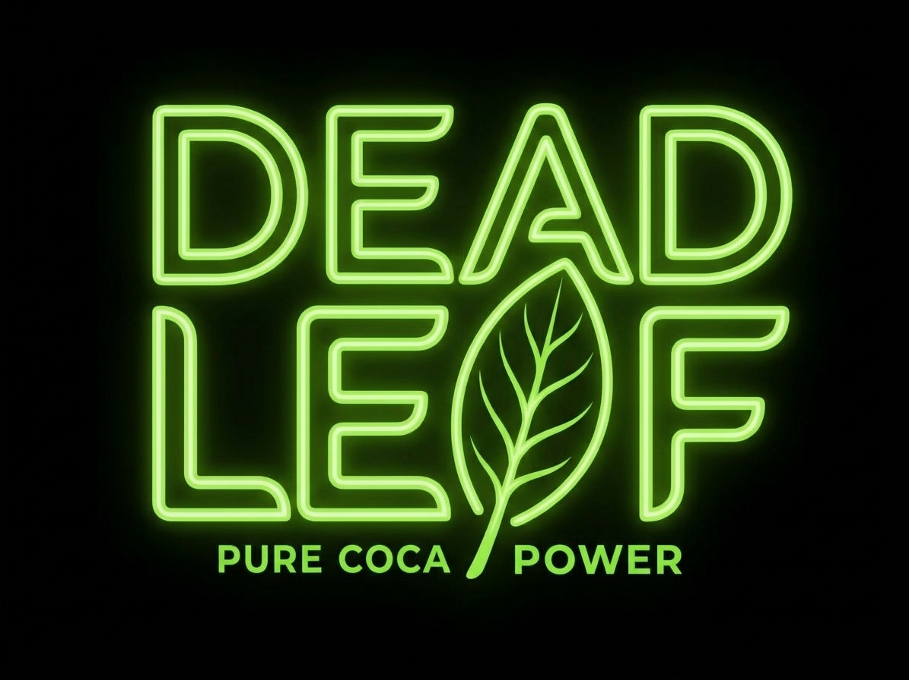
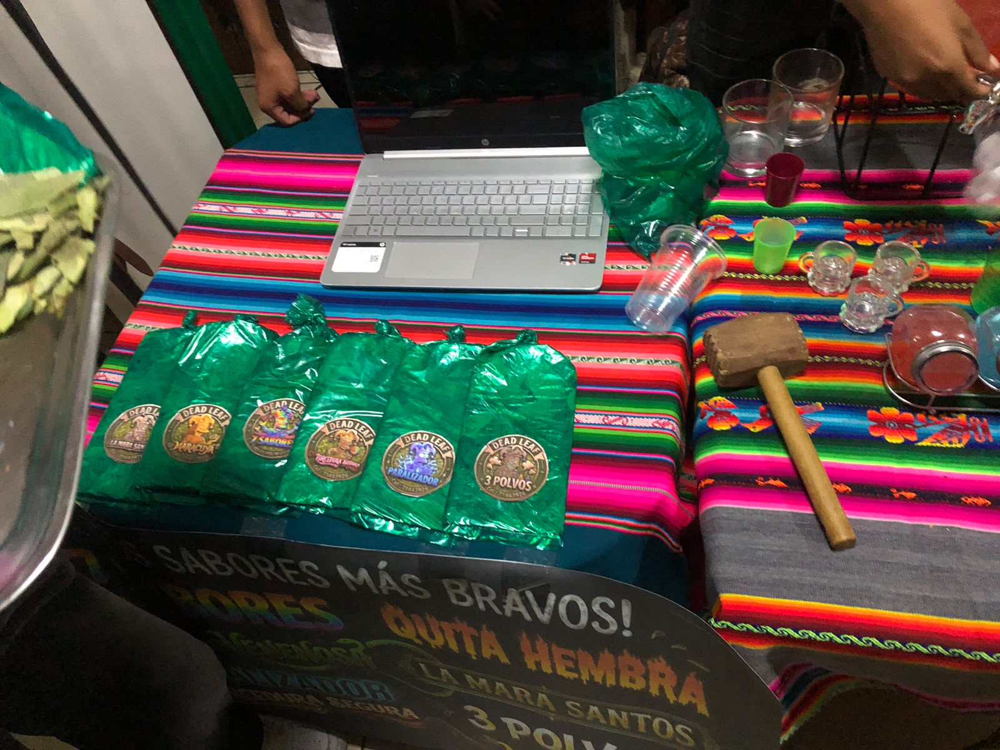
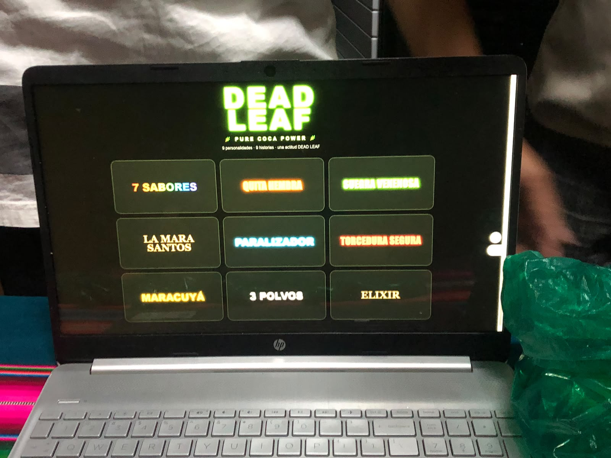
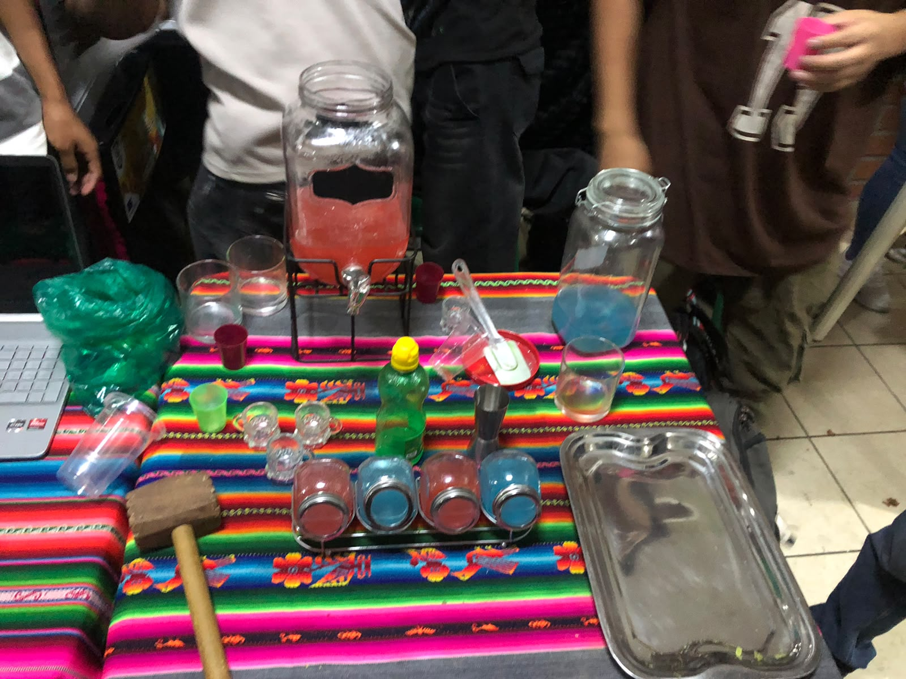

Stand 2: DEAD LEAF

Información del Stand
¿Qué venden?: Ofrecen bebidas y shots artesanales bajo la marca "Dead Leaf", caracterizados por su energía y el lema "Pure Coca Power". Cuentan con un menú de 9 sabores intensos y únicos, con nombres creativos como "Quita Hembra", "Paralizador", "Torcedura Segura", "La Mara Santos" y "3 Polvos"
Dirección / Ubicación: No cuenta con tienda fisica
Redes sociales / Contacto: Instagram: @DeadLeaf_Oficial | WhatsApp: +591 71443936
Dato Interesante:Cada uno de nuestros 9 sabores representa una de "9 personalidades, 9 historias" diferentes. Además, la experiencia en el stand incluye una preparación llamativa con coloridos ingredientes en polvo, licores y herramientas curiosas como un mazo de madera.
Sistema que requiere: El dueño del emprendimiento al ser un estudiante de la carrera de Sistemas Informaticos de 2do año ya cuenta con un programa propio como se observa en una de las imagenes
Galería Fotográfica
Imágenes de los productos y nuestra visita al stand:



Entrevista al Emprendedor
Video corto entrevistando a los encargados del stand.